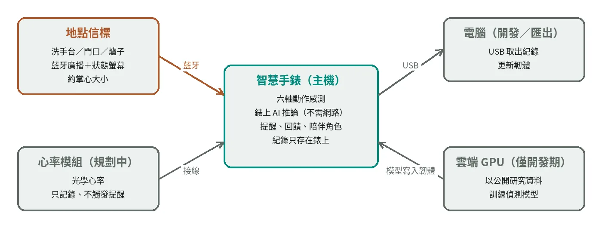
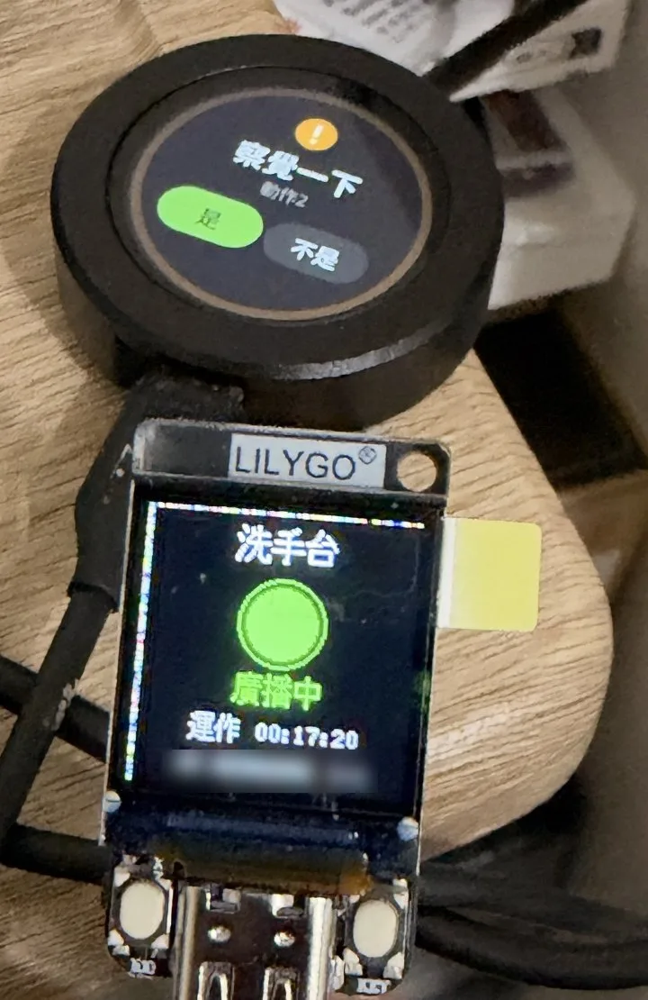
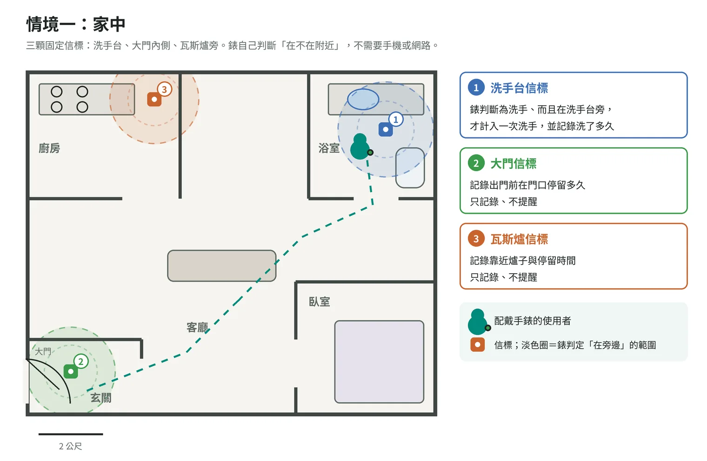
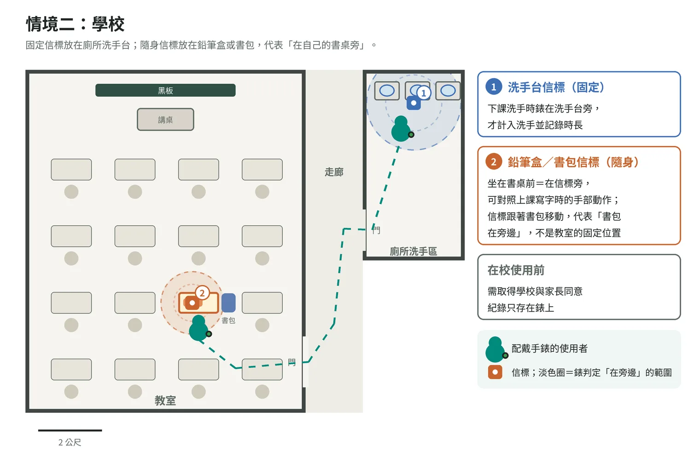
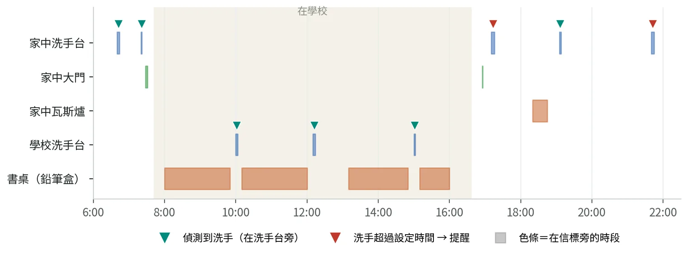

察覺錶系統簡介
一支自製智慧手錶，用手腕動作感測與錶上人工智慧，在重複行為（例如反覆洗手、手伸向頭髮）發生時溫和提示「察覺一下」，並讓使用者回饋是否正確，累積成可與治療師一起回顧的紀錄。研究原型，行為察覺的輔助工具；不是醫療器材，不做診斷。
系統架構


主要功能
| 功能 | 做什麼 |
|---|---|
| 洗手偵測 | 錶上輕量神經網路判斷正在洗手並記錄時長；登錄洗手台信標後須在洗手台旁才計入；持續超過設定時間才提醒。 |
| 地點紀錄 | 地點由使用者自己新增與命名（最多 6 個，例如廚房洗手台、大門、書桌），名稱可在 裝置設定 修改。「洗手台」種類的地點是洗手的必要條件，其他地點只記錄進出、不提醒。 |
| 個人化動作提醒 | 使用者示範想被提醒的動作，之後做出相似動作持續數秒才提醒。 |
| 回饋紀錄 | 提醒後按「是／不是」，也能補記「我剛剛有做」。 |
| 陪伴與放鬆 | 機器人助理小圓、傾斜手腕的滾球迷宮；不懲罰、不推播。 |
使用情境（示意）



目前驗證成果與限制
- 洗手偵測以國際公開的強迫洗手研究資料（22 位受試者、約 2,600 小時）在「模型沒看過的人」身上驗證：預設設定約 6 成的洗手能被偵測到，平均每小時誤報約 2.6 次；個人差異大。
- 錶上計算與電腦端一致，每次判斷約 0.03 秒，不需網路。
- 地點信標實機測試：在旁時判定穩定；關掉信標約 26 秒判定離開，重新開啟約 5 秒判定回來。
- 尚未進行實地配戴測試；無法分辨某次洗手是否屬於強迫性；「洗多久算太久」需由使用者與治療師共同設定；電池續航尚未量測。
材料
| 品項 | 規格 | 用途 |
|---|---|---|
| 手錶主機板 | Waveshare ESP32-S3-Touch-LCD-1.28（1.28 吋圓形觸控螢幕、六軸動作感測） | 手錶 |
| 信標（有螢幕） | LILYGO T-QT Pro（ESP32-S3、0.85 吋螢幕） | 洗手台等地點信標 |
| 信標（無螢幕） | ESP32-C3 小型開發板，或市售 iBeacon 標籤 | 門口、爐子信標 |
| 心率模組（規劃中） | 光學心率模組（綠光，適合手腕） | 心率紀錄，只記錄不觸發提醒 |
| 震動提醒（規劃中） | 扁平震動馬達＋驅動電晶體＋保護二極體 | 安靜提醒 |
| 供電與外殼 | 小型鋰電池、USB 行動電源、3D 列印外殼與錶帶 | 配戴與信標供電 |
研究依據（節錄）
- Burchard, R., et al. (2026). A real-world dataset for detecting handwashing in daily life using wrist motion data from wearables. Scientific Data, 13, 179. doi
- Kirsten, K., Burchard, R., et al. (2025). Exploring wearable-based detection of compulsive handwashing in a non-controlled setting: A case study. ISWC '25, 199–202. doi
- Son, J. J., et al. (2019). Thermal sensors improve wrist-worn position tracking. npj Digital Medicine, 2, 15. doi
- McGuire, J. F., et al. (2014). Treating trichotillomania: A meta-analysis… Journal of Psychiatric Research, 58, 76–83. doi
- Kobori, O., et al. (2012). A qualitative study of the investigation of reassurance seeking in obsessive–compulsive disorder. JOCRD, 1(1), 25–32. doi
手錶韌體原始碼、偵測模型與調校參數不公開；信標程式碼見 信標程式碼。研究原型，非醫療器材，不提供醫療建議。